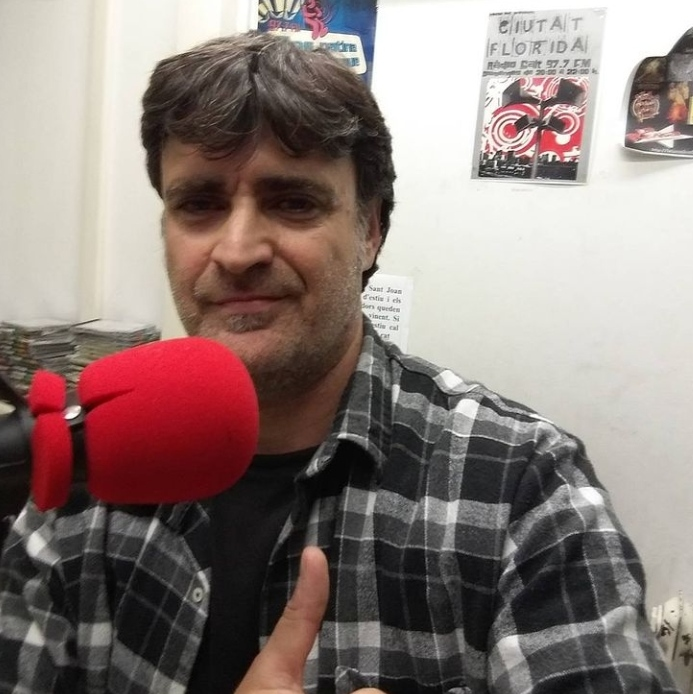

Pujant Per L'Escala Mecànica De Baixada
Tots els dilluns a les 22:00hrs
Punxa al botó per escoltar Ràdio Salt en directe

Enric Casadevall
Locutor independent actiu des del 1987.


Part de la programació
"PUJANT PER L'ESCALA MECÀNICA DE BAIXADA" MÚSICA INDEPENDENT 80'S 90'S 00'S THE SMITHS, THE SOUND, THE CHAMELEONS... PIXIES, SONIC YOUTH, PAVEMENT... ARCTIC MONKEYS, ARCADE FIRE, KASABIAN... entre d'altres